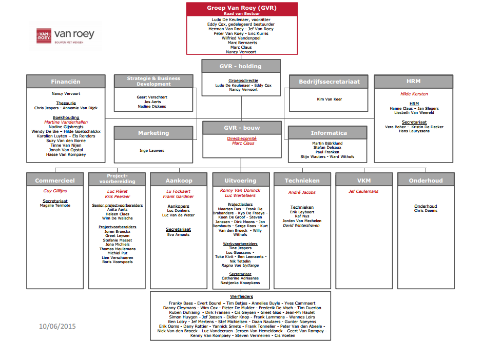
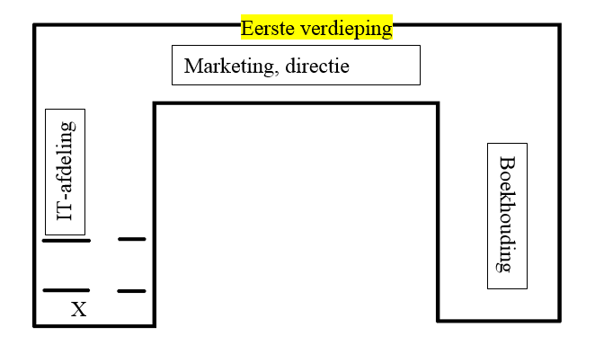

Bedrijfseconomische analyse van het stagebedrijf
April 20, 2016Kennismaking met de onderneming:
Naam en juridische vorm:
Groep Van Roey NV
Activiteiten en economische sector:
Bouwsector
Openingsuren:
Maandag tot donderdag: 8u15-17u, vrijdag: 8u15-16u30
Aantal personeelsleden:
Van Roey Rijkevorsel telt 124 arbeiders en 117 bedienden. De gehele groep telt +/- 700 werknemers. Dit aantal was niet precies te bepalen omdat er bij 2 dochterbedrijven kleine serverprobleempjes waren.
Soort boekhouding, wie voert ze en met welk boekhoudpakket:
Hier op het bedrijf maakt men een Analytische boekhouding. Het wil zeggen dat er veel meer info terug te vinden is over de herkomst van transacties. Deze boekhouding wordt uitgevoerd door een beperkt aantal boekhouders.
Specifieke milieuvoorwaarden waar de onderneming moet aan voldoen:
Het bedrijf zelf moet voldoen aan Klasse 1 van de VLAREM omdat men hier gebruik maakt van ondergrondse opslag van koud en warm water. In de winter pompt men warm water op om het gebouw te verwarmen, in de zomer pompt men koud water op om het gebouw te koelen. Dit is aan te vragen bij de provincie. Voor de bouwwerven moet men voldoen aan Klasse 3 van de VLAREM. Dit wil zeggen dat ze bij de gemeente moeten melden wat ze waar gaan bouwen.
Organogram:

Toelichten van de belangrijkste afdelingen binnen de onderneming:
Zoals in bovenstaand organogram te zien is, is de bouw de meest belangrijke afdeling binnen Van Roey omdat het hun hoofdactiviteit is. Binnen de groep is de informatica, marketing, HRM (Human Resource Management) en financiën afdeling ook zeer belangrijk omdat zij een grote invloed hebben op de rest van het bedrijf.
Situeren van de informaticadienst en jezelf erbij tekenen:
De informaticadienst zit op het eerste verdiep aan de kant van de ingang. Als je binnenkomt, heb je rechts een trap naar boven en zo kom je terecht op de afdeling.
Bespreken van je eigen kantoor

Mijn eigen werkplek kan je niet echt een kantoor noemen. Het is een soort van eilandenbureau waar we inclusief mezelf met 6 werken. Er bevindt zich ook een stockagekamer waar er reserve onderdelen en kapotte onderdelen te vinden zijn. Dit bevindt zich achter mijn rug dus achter de ‘X’ op bovenstaande tekening. Naast die stockagekamer bevindt zich een vergaderlokaal waar meetings worden gehouden.
Marktomgeving van de onderneming:
Doelgroep van de onderneming:
De doelgroepen van Van Roey zijn private partijen met een bouwproject en publieke partijen met een bouwproject.
Belangrijkste klanten:
De belangrijkste klanten van Van Roey zijn de gemeentes in Vlaanderen en Brussel. In Wallonië zijn ze ook actief, maar daar ligt hun doel eigenlijk niet echt. Er zijn ook private klanten. Deze klanten hebben een groot bouwproject zoals industriebouw, scholen, kantoren, zorgcentra,…)
Hoe bereikt de onderneming haar doelgroep:
Het bedrijf bereikt zijn doelgroep vooral door zijn goede naam. Doordat de naam zo goed gekend is, komen de klanten automatisch naar hier. Ook het plaatsen van openbare aanbestedingen helpt mee om de doelgroep te bereiken. Het bedrijf beschikt ook over een groot netwerk van commerciële mensen die zich proactief opstellen en meedenken tijdens bijeenkomsten of vergaderingen.
Welke promotie of publiciteit wordt gevoerd:
De hoofdzaak van promotie is sponsoring. Van Roey doet heel veel sponsoring. Ze adverteren zeer weinig, maar sturen heel vaak persberichten de wereld in om zo ook herkenning te krijgen op sociale media. Ze zijn ook heel vaak als spreker aanwezig op meetings of evenementen om zo hun klanten te bereiken. Ze organiseren gesprekken met potentiële klanten om te laten zien wat ze voor hen kunnen doen en tot slot gebruiken ze ook vacatures om hun doelgroep te bereiken.
Waarom koos de onderneming voor haar vestigingslocatie:
Het bedrijf koos voor zijn locatie omdat ze vroeger (275 jaar geleden) begonnen zijn in Rijkevorsel. Omdat het hier dus een gevestigde waarde is, wilde men niet meer weggaan en dus bleef het nieuwe gebouw ook in hun oude vertrouwde omgeving namelijk de gemeente Rijkevorsel.
De positieve en negatieve vestigingsfactoren van de locatie:
De positieve aspecten zijn dat ze al heel lang aanwezig zijn in Rijkevorsel waardoor ze een gevestigde waarde vormen. Er is heel veel ruimte en zo creëren ze heel wat werkzekerheid voor de bevolking in de buurt. Ze zijn een graag geziene, geliefde partij in Rijkevorsel en ze bleven trouw aan hun roots door in de Kempen te blijven. De negatieve aspecten zijn dat ze niet echt centraal liggen. Hierdoor moeten de mensen soms verdere afstanden afleggen richting een werf. Met andere woorden is een plek centraal in het land misschien beter qua woon-werkverkeer.
Is de locatie gekocht, gehuurd of geleased? Bespreek.
De locatie is volledig van de groep Van Roey. Het gebouw werd ook door hen gebouwd. Er is dus geen sprake van huur of leasing.
Belangrijkste leveranciers:
Staalbeton NV, Genisol NV, Vangeel Wegenbouw bvba, Cegelec NV, Janssens Jos & Zonen NV, Beko bvba,…
Welke inspanningen doet de onderneming om klanten, producten en of diensten, assortiment, vestigingsplaats, prijs, promotie, plaats en presentatie op mekaar af te stemmen:
Van Roey heeft een 8-tal dochterbedrijven. Men probeert in al deze bedrijven één huisstijl te creëren zodat alles 1 groot bedrijf lijkt te zijn. Met deze 8 bedrijven probeert men een groepsstructuur te maken waardoor alles vlot zou moeten verlopen en ze proberen ook een lijn trekken in alles wat ze doen. Waar men zich ook mee bezig houdt en waar heel wat tijd in kruipt is samenzitten met de dochterbedrijven om als een grote eenheid naar buiten te komen.
Zou je solliciteren bij dit bedrijf? Waarom wel, waarom niet?
Ik denk wel dat ik zou solliciteren bij dit bedrijf. In het begin kwam het wat moeizaam op gang, maar vanaf de donderdag van de eerste stageweek werd het eigenlijk aangenamer werken. Het zijn toffe collega’s die je goed begeleiden in je werk dus het zou zeker een aangename werkplek zijn. Je leert op de IT-afdeling ook heel wat medewerkers kennen, omdat iedereen hier een laptop heeft en de meesten nogal vaak problemen hebben met hun laptop. Het werk varieert van kleine word-probleempjes tot grote netwerkproblemen. Het is dus een variabele job waarin je met allerlei verschillende problemen te maken krijgt.